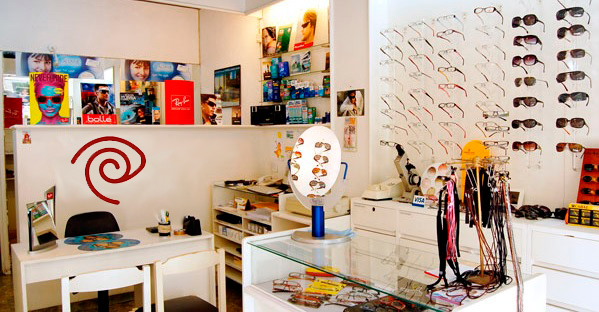
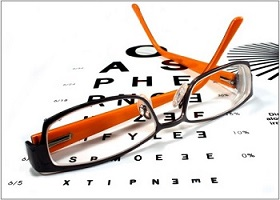
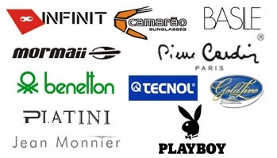
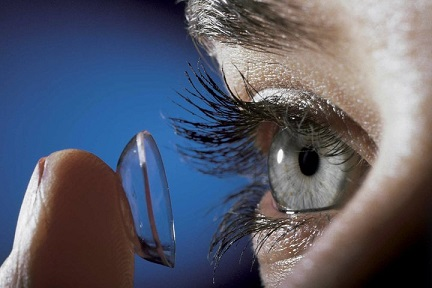
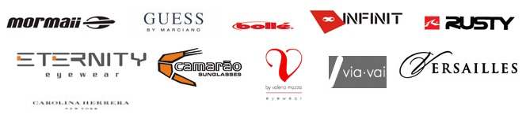
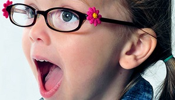

Lentes de Receta
Lentes Progresivas
La investigación, el esfuerzo, la innovación y el desarrollo han llegado a una generación de cristales con el resultado de un enfoque y adaptación perfecta, que ha permitido la posibilidad de elegir el anteojo con el diseño del gusto del usuario.
Es indispensable para lograr el éxito de estos cristales consultar con técnicos ópticos altamente cualificados, que le aseguren el ajuste perfecto, la clave para obtener una visión confortable.
Ópticas del Notariado empresa líder, se ha propuesto hacer de esta generación de cristales, que se convierta en el aliado más adecuado a tu ritmo de vida, al dotarte de una visión que cubra tus necesidades diarias con la garantía de una atención personalizada.
Cristales
En lo que respecta a cristales, usted puede encontrar una gran variedad para solucionar cualquier problema visual, como los multifocales, bifocales, para miopía, hipermetropía, presbicia, astigmatismo y mucho más.
Brindamos la mas alta calidad en cristales de todas las marcas:
Lentes de Contacto
Las lentes de contacto "Confort-Lens" líder mundial de la visión, son exclusivas de Ópticas del Notariado y una garantía para sus ojos.Las personas que pasan los 45 años necesitan algún tipo de ayuda para realizar tareas de cerca, como leer, de distancia media, como trabajar en la computadora, ver la pantalla del celular, etc, todo esto mientras se mantiene la visión de lejos.
Hasta no hace mucho tiempo solo se disponía de anteojos comunes, o progresivos, pero hoy usted tiene la solución alternativa, que logra darle una excelente visión con lentes de contacto y sin pasar por una sala de operaciones: los lentes de contacto progresivas multifocales, para ver bien a todas las distancias, diseñados mediante una técnica revolucionaria de gemetrías asimétricas dando una visión perfecta.
Además sumamente confortables pues están fabricadas con una sustancia presente de forma natural en las membranas de las células humanas.
Las características más destacables de esta sustancia es su atracción por el agua, lo que ayuda a mantener la estructura de la lágrima, resultando más cómodos durante las horas de uso.
Estas lentes de contacto progresivas, multifocales "Confort-Lens" están indicadas para personas hipermétropes, miopes y con ligeros astigmatismos.
Lentes de Sol
Sobre la correcta protección del aparato ocular mediante la utilización LENTES DE SOL con filtros especialmente diseñados.
El solEs la principal fuente de emisión de radiaciones en nuestro planeta. Estas radiaciones se agrupan en un amplio espectro según su longitud de onda. De todas estas radiaciones los rayos ultravioletas (UV) son los más agresivos para el organismo humano. A esto hay que añadir que la acción de estas radiaciones nocivas aumenta en nuestro tiempo con la disminución del grosor de la capa de ozono.
Ante estas adversidades el ojo y la piel humanos no poseen defensas naturales suficientes como para protegerse por sí solos y necesitan de otros factores externo de protección.
Los filtros protectores que se incorporan en los cristales de las gafas de sol, se utilizan para proteger nuestros ojos de las radiaciones solares nocivas, así como para reducir la fatiga ocular y mejorar la percepción visual. Sin embargo, hoy en día las gafas de sol han pasado a ser algo más que un elemento protector contra las radiaciones solares, siendo cada vez más las personas que las utilizan por motivos estéticos.
De todas las radiaciones procedentes del sol, las que pueden tener un mayor efecto sobre nuestros ojos son: La radiación ultravioleta, que comprende las longitudes de onda entre 180 y 380 nm. (nanomicrones)
La mayoría de las radiaciones UV son absorbidas en la córnea y regiones adyacentes (esclerótica y conjuntiva).
El grado de oscuridad de las lentes de sol no es un indicativo de su nivel de protección, existiendo lentes muy oscuras que no absorben adecuadamente las radiaciones nocivas. En ese caso, su efecto es más perjudicial que beneficioso, ya que estas lentes hacen que pase a nuestros ojos menos luz visible, disminuyendo así nuestros mecanismos naturales frente a la luz (como la contracción de la pupila). Por este motivo, es peor llevar unas gafas de sol con una mala protección solar que no llevar ninguna.
De ahí la importancia de adquirir las gafas de sol en OPTICAS DEL NOTARIADO, y que estas gafas hayan pasado los controles de calidad necesarios lo que se garantiza comprando lentes de marcas reconocidas.
En Ópticas del Notariado encontrará:
Para concluir, diremos que un filtro solar mal elegido, no solo es ineficaz, sino que puede ser altamente nocivo.
Lentes de Niños
¡Proteja sus ojos!
Hasta los cinco años el desarrollo integral del niño depende casi exclusivamente de la visión, casi el 80 por ciento de lo que aprende lo hace a través de los ojos.
Es un buen momento para revisar la vista de tus hijos. Las miopías escolares son frecuentes y un estudiante que no ve bien el pizarrón no puede seguir el ritmo de la clase, no se entera, se distrae y acaba teniendo problemas escolares. Por ello los expertos recomiendan un primer control visual a los 4 años, antes de comenzar la escolarización: hay que comprobar si la alineación de los ojos es correcta, descartar transtornos como el ojo vago, o detectar posibles defectos de refracción.
Lo ideal es repetir estos controles cada año hasta los 25.
¡Proteja sus ojos!
Evite que pasen mucho tiempo viendo televisión o frente a la computadora: se produce un gran cansancio visual por sobreuso de los ojos. Delante del PC disminuye la frecuencia del parpadeo; por ello es importante humedecer con lágrima artificial y descansar cada cierto tiempo.
¿Sabía que...?
- El 80 por ciento de los estudiantes tienen problemas visuales.
- Tres de cada cuatro fracasos escolares está relaciona con problemas de visión.
- 25 de cada 100 estudiantes se vuelven miopes durante la etapa escolar.
- La miopía afecta a más del 50 por ciento de los universitarios.
Consulte con su oftalmólogo el estado de la visión de sus chicos. En Ópticas del Notariado tenemos los mejores armazones y cristales para atender su receta.
Cristales y Armazones para niños.